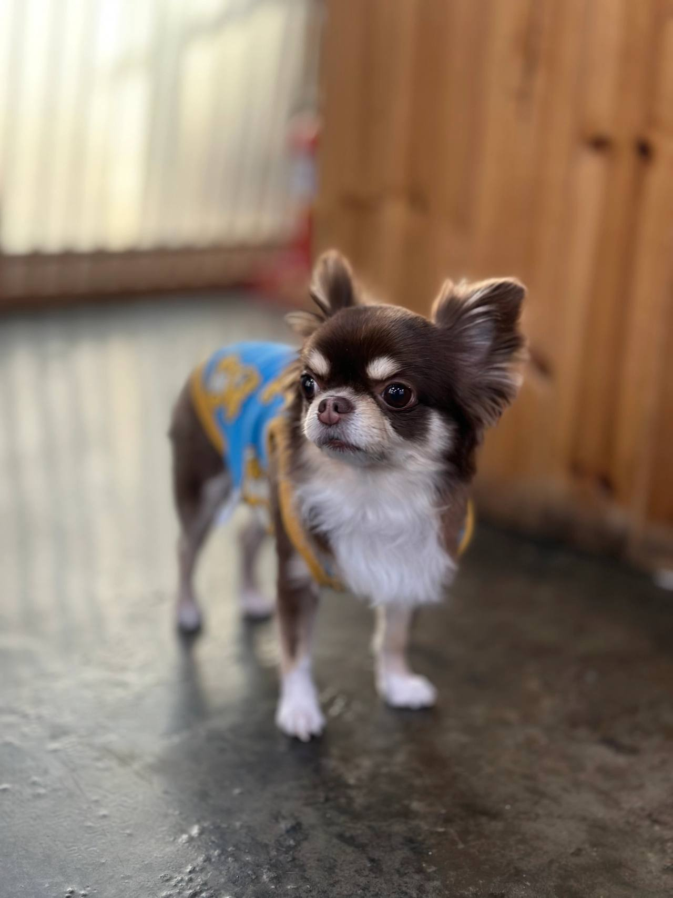
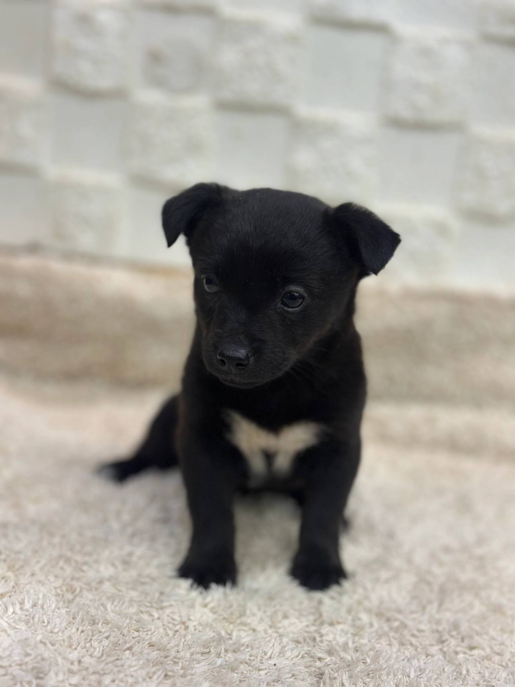
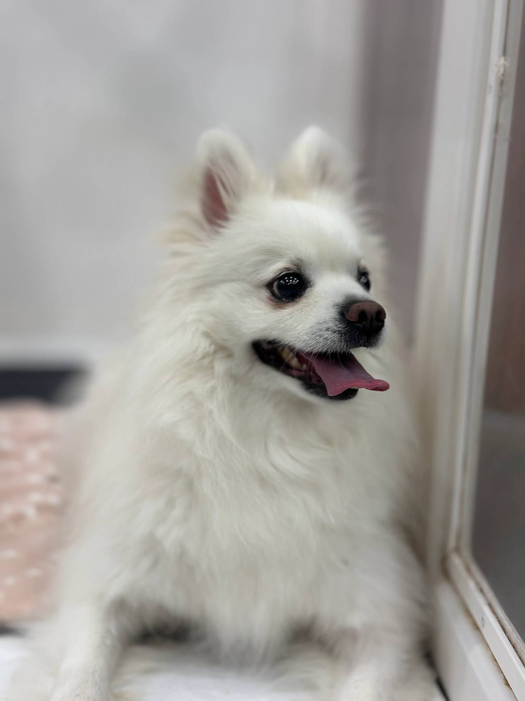

임신, 출산
출산 전후로돌보기 어렵거나아기와 함께 두기불안할 때
LOCAL GUIDE
돌봄을 지속하기 어려운 사정이 생겼을 때 무책임한 방치 대신 영통강아지파양 선택지를 고민하는 것은 마지막 책임감의 표현일 수 있습니다. 해당 시설이 체계적인 관리 일과를 유지하는지 살펴보는 과정이 매우 중요합니다. 수용 정원이 모두 차서 자리가 없는 경우에는 즉시 보호가 어려우므로 유선상 조율이 선행되어야 합니다.
REHOMING
개인적인 사정으로 반려견과 더 이상 함께하기 어려운 상황일 때 체계적인 절차를 거쳐 아이를 입소시키고 무료 분양으로 보금자리를 이어 줍니다. 전화 상담(0505-707-0401)을 통해 현재 상황을 파악하며 무리한 수용 대신 여건에 맞춰 신중하게 돌봄을 시작합니다.
갑작스러운 환경 변화 속에서도 아이가 평온함을 잃지 않도록 세심하게 보살피며 다음 행보를 준비합니다. 이는 책임 있는 보호 속에서 아이에게 새로운 가족을 만날 기회를 열어 주는 과정입니다.
새로운 가족을 찾아 주는 일은아이에게 건넬 수 있는마지막 선물입니다.
출산 전후로돌보기 어렵거나아기와 함께 두기불안할 때

함께 살다동물 알러지가 나타나생활이 어려워졌을 때

해외로 데려갈 수 없거나이사한 집에서함께하기 어려울 때군 입대와 오랜 부재도같은 경우에 가깝습니다.

보호자가 아프거나연로해졌을 때아이도 나이가 들어집에서 돌보기 어려울 때
상담부터 입양 공고까지, 순서는 같습니다.

유선 상담을 통해 나이, 지역, 질병 유무와 특이 상황을 확인합니다. 센터 내부 공간을 종합적으로 살펴본 뒤 1차 입소 가능 여부를 결정합니다.

직접 센터로 방문하시거나 이동 지원 일정을 조율하여 선택합니다. 전국 어디든 전담 인력이 무상으로 픽업하여 이동을 돕습니다.

제반 확인 사항과 규정된 비용 조항을 면밀하게 검토합니다. 안내 내용을 충분히 숙지한 후 정식 입소 동의서를 작성합니다.

건강 상태와 함께 대형견, 소형견, 노령견 여부를 다각도로 살핍니다. 확인된 상태에 맞춰 아이가 안전하게 머물 전용 공간을 정합니다.

안정적인 생활 속에서 아이의 사진과 영상을 정성껏 촬영합니다. 새로운 인연을 맞이할 수 있도록 사전 자료를 차분히 정리합니다.

공식적인 입양 공고를 등록하여 아이의 다음 여정을 이끕니다. 적합한 보금자리를 찾아 새로운 가족과 따뜻하게 연결됩니다.
개별 일과와 성향 점검을 거쳐 생활 적응을 준비하고 있는 강아지 현황입니다.
양육 환경과 반려견의 성향이 부합하는지 점검하는 순서입니다.
주거 형태, 가족 구성원의 동의 여부, 돌봄 시간 등을 유선 상담을 통해 점검합니다.
보호소에 방문하여 개체의 건강 이력과 행동 특성을 확인하고 직접 대면 시간을 가집니다.
지속 양육에 관한 세부 항목을 확인하고 확인 서류를 작성한 뒤 가정을 이룹니다.
산책하고, 밥 먹고, 미용하는 보호소의 하루입니다. 사진을 누르면 그 이야기를 볼 수 있어요.
안내
산책로와 공원이 잘 조성된 영통 동네라도 개인적인 사정으로 더 이상 돌보지 못하는 안타까운 국면이 생기곤 합니다.
어려운 고민 끝에 입소를 결심하셨다면 우선 0505-707-0401 유선 문의로 영통강아지파양 세부 규정을 차근차근 확인해 보세요. 현장 공간이 꽉 차 있을 때는 입소가 거절될 수 있으므로 사전에 유선 조율을 거치는 절차가 안전합니다. 상담을 통해 서류 구비 요령과 아이의 입소 적합성을 함께 논의해 드립니다.
입소 당일 차질 없는 행정 처리를 위해 보호자는 정해진 필수 서류를 사전에 구비해 주셔야 합니다. 마이크로칩 번호가 기재된 동물등록증, 동물병원 접종 및 중성화 확인서가 대표적인 지참 항목입니다.
새로운 환경에서 느낄 두려움을 덜어주기 위해 보호자의 냄새가 밴 담요, 즐겨 쓰던 방석과 장난감을 챙겨주시는 것이 좋습니다. 영통강아지파양 과정에서 이러한 준비는 아이가 낯선 장소에 빠르게 안착할 수 있는 든든한 버팀목이 됩니다.
온라인에서 사진만 예쁘게 찍어 올린 뒤 예약금을 요구하고 잠적해 버리는 신종 피해 사례들이 곳곳에서 발생하고 있습니다. 생명을 입양 보내거나 데려오는 과정에서 직접 얼굴을 마주하지 않고 돈부터 요구하는 방식은 반드시 의심해야 합니다.
책임감 있는 보호소는 대면 면담을 원칙으로 삼으며, 입양 희망자가 직접 시설에 와서 아이의 행동을 관찰하도록 유도합니다. 영통강아지파양 체계 안에서는 이러한 투명성을 기본으로 삼아 소중한 생명이 안전한 울타리로 넘어가도록 철저히 관리합니다.
보호자가 시설을 직접 찾아와 환경을 확인하는 것이 최선이지만, 피치 못할 사정으로 이동이 불가능한 경우가 있습니다. 장거리 거주, 질병으로 인한 거동 불편, 급작스러운 출국 일정 등으로 이동이 제한될 때 전용 운송 지원이 가능합니다.
전문 픽업 담당자가 안전한 전용 케이지를 갖추고 방문하여 아이의 상태를 확인한 후 안전하게 시설로 이송합니다. 영통 영통강아지파양 전담팀과 이동 일자, 픽업 시간, 준비 서류 등을 사전에 긴밀히 조율하시면 무리 없이 진행할 수 있습니다.
인터넷에서 일괄적인 정가표를 기대하셨다면, 실제로는 아이마다 산정 금액이 크게 달라진다는 점을 확인하셔야 합니다. 연령이 높거나 지병이 있어 정기 검진이 필요한 경우, 행동 문제가 심해 전문 교정이 수반되는 경우는 관리 비용이 다르게 책정됩니다.
무조건 0원에 맡아준다거나 고정 수수료만을 내세우는 곳은 사후 관리가 부실할 위험이 크므로 주의해야 합니다. 영통강아지파양 진행 전 전화(0505-707-0401) 상담을 통해 아이의 세부 조건을 상세히 전달하고 산정된 비용을 투명하게 안내받으십시오.
보호자가 시설의 청결도와 관리 환경을 직접 두 눈으로 확인하고 시설 관계자와 면담을 진행하는 방문 인계를 가장 권장합니다. 환경을 직접 둘러보아야 아이가 앞으로 지내게 될 공간에 대해 안도감을 느낄 수 있기 때문입니다.
하지만 보호자의 원거리 거주, 거동 불편, 급작스러운 일정 등으로 직접 내방이 불가한 경우에는 안전한 이동 전용 차량을 이용한 픽업 서비스가 지원됩니다. 영통강아지파양 요청 시 이동 경로와 출발 시간, 케이지 적응 상태를 조율하여 스트레스를 최소화한 운송을 돕습니다.
강아지의 생애 전환점을 마련하는 첫걸음은 전문 상담원과의 1:1 유선 대화로 시작됩니다. 보호자의 불가피한 사유(이사, 해외 이민, 출산, 질병, 군입대 등)와 함께 아이의 기본 제원을 상세히 청취합니다.
나이, 성별, 품종, 현재 건강 상태 및 기저 질환 유무, 중성화 여부를 종합적으로 확인하여 입소 가능 여부를 1차 검토합니다. 영통 영통강아지파양 접수 센터(0505-707-0401)를 통해 대기 없이 상세한 진단 및 안내를 받으실 수 있습니다.
피치 못할 사정으로 눈물 속에 시설에 맡겨졌던 한 아이는 세심한 적응 프로그램과 행동 교정을 거쳐 훌륭한 새 가족을 만났습니다. 전 보호자가 성실하게 남겨준 건강 기록과 애착 물품 덕분에 아이는 분리불안 없이 빠르게 새 가정에 녹아들 수 있었습니다.
책임 있는 이별은 단순한 포기가 아니라 또 다른 사랑을 선물하는 배려 깊은 행동입니다. 영통강아지파양 선택을 고민하고 계신다면, 혼자 자책하지 마시고 전문 상담원과의 소통을 통해 아이를 위한 최선의 미래를 설계해 주시기 바랍니다.
상담 없이 불쑥 찾아와 당일 무조건적인 인계를 요구하는 것은 시설 내 기존 개체들의 위생과 안전을 위협할 수 있습니다. 쾌적한 환경을 유지하려면 독립된 생활 공간과 검역 적응실의 공실 여부가 사전에 확인되어야 합니다.
자리가 부족한 상황이라면 대기 등록을 거쳐 안전한 자리가 확보된 후 입소 일정을 조율하게 됩니다. 영통강아지파양 이용을 희망하시는 보호자께서는 유선으로 잔여 공간을 먼저 확인하신 뒤 방문 약속을 잡으셔야 헛걸음을 피할 수 있습니다.
기질 및 생활 습관 비대면 사전 평가
공격성, 분리불안, 짖음, 입질 여부 및 기존 배변 방식을 가감 없이 파악하여 보호 적합성을 평가합니다.
현장 방문 및 개체 대면 건강 확인
보호소에 직접 내방하여 육안 검진을 진행하고 아이의 심리 상태와 피모, 구강 상태를 최종 확인합니다.
전국 대표 번호를 통한 1차 비대면 상담
유선상으로 아이의 품종, 연령, 예방접종 상태, 잔여 공간 여부를 종합적으로 확인하고 입소 가능성을 타진합니다.
영통강아지파양 상담 전화는 무엇인가요?입소 상담 전화는 0505-707-0401입니다. 영통이라고 해서 바로 맡길 수 있는 것은 아니고, 자리와 아이 상태를 먼저 확인합니다.
영통에 따로 적힌 보호소 주소가 있나요?영통강아지파양 페이지는 영통 상담 안내입니다. 이 글에 없는 주소를 그 지역 지점이라고 안내하지 않습니다.
전화하면 바로 진행되나요?자리가 없거나 생활이 맞지 않으면 바로 진행되지 않습니다. 전화로 확인한 뒤 만남을 정합니다.
입소 절차를 밟으려면 비용은 어떻게 산정되고 안내받나요?아이의 품종, 연령, 만성 질환 유무, 건강 상태 및 교정 필요성에 따라 돌봄 비용이 상이하며 유선 면담을 통해 책정 기준을 투명하게 고지합니다.
위탁 시 반드시 챙겨가야 하는 구비 서류는 무엇인가요?보호자 신분증 사본, 동물등록증 원본 또는 등록 번호, 최근 동물병원 예방접종 및 진료 기록부가 반드시 필요합니다.
당일 바로 방문해서 아이를 맡기는 것이 가능한가요?보호실 정원이 꽉 차 자리가 없으면 접수가 절대 불가하므로 반드시 사전에 전화로 공실 여부를 확인하고 일정을 조율해야 합니다.
외모나 사진만 보고 위탁 및 보호 여부를 판단해도 괜찮은가요?사진만으로는 아이의 기질과 건강 상태를 온전히 파악할 수 없으므로 상세한 생활 기록 인계와 직접 대면 확인이 원칙입니다.





CONTACT
입양과 입소, 전국 어디서든 전화로 상담합니다.
전국 입소문의